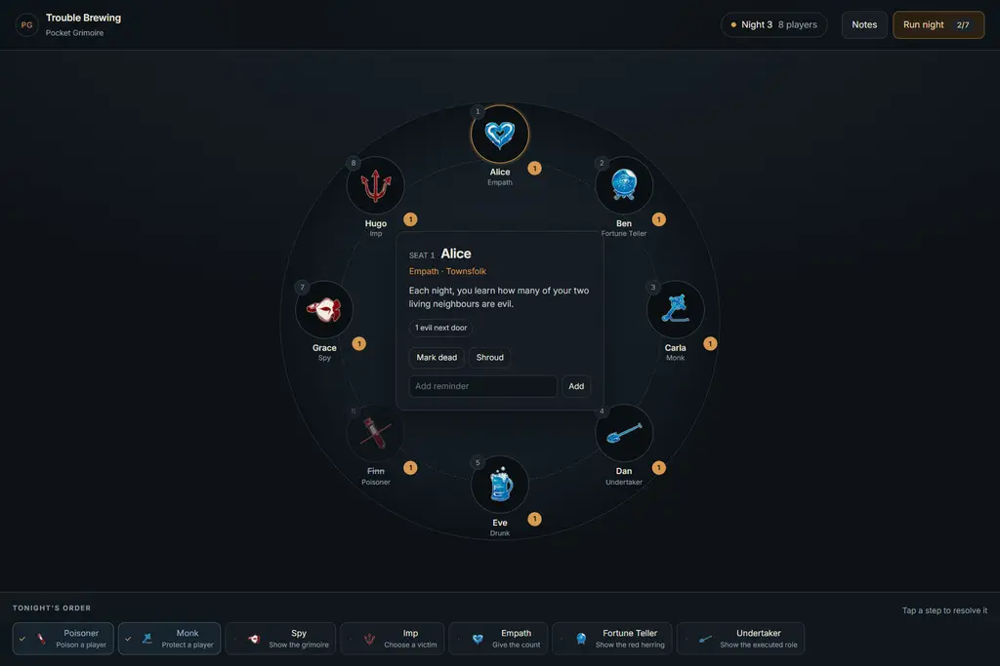
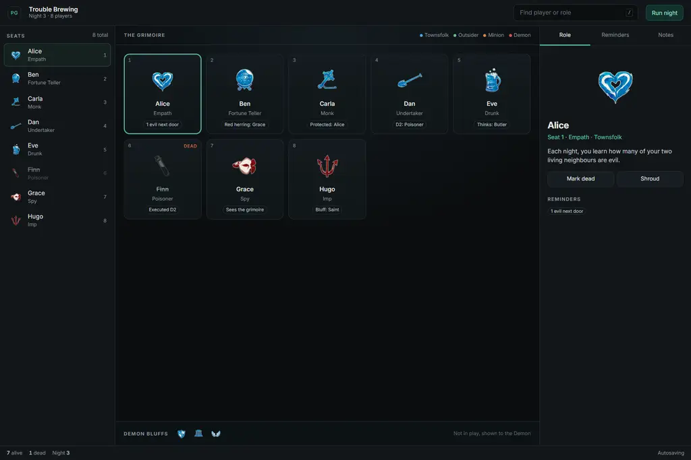
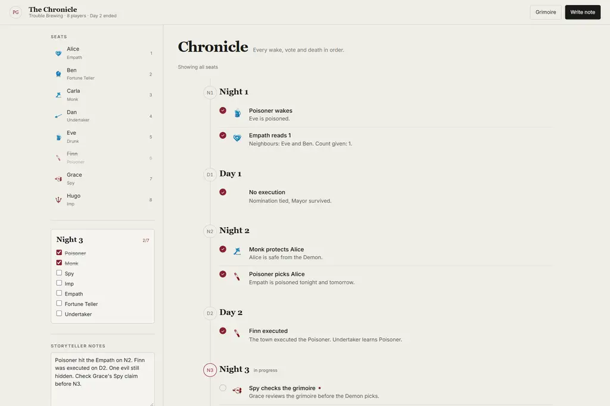
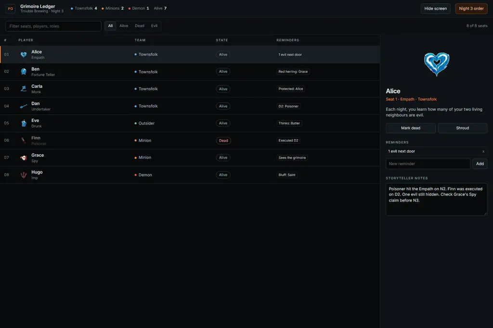
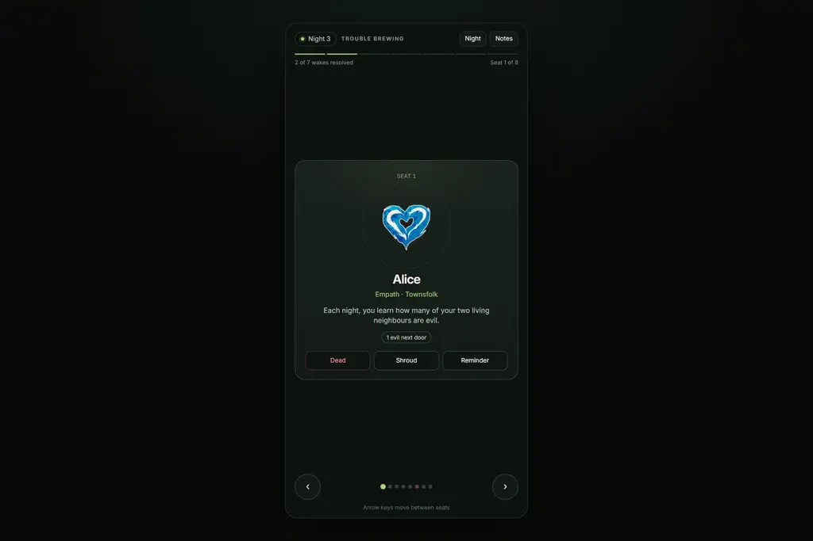
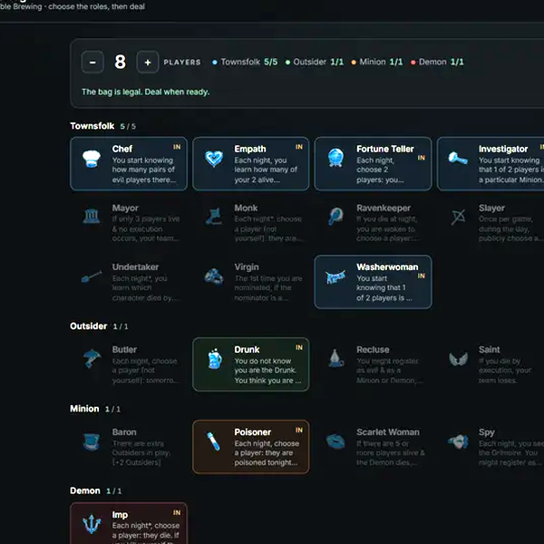
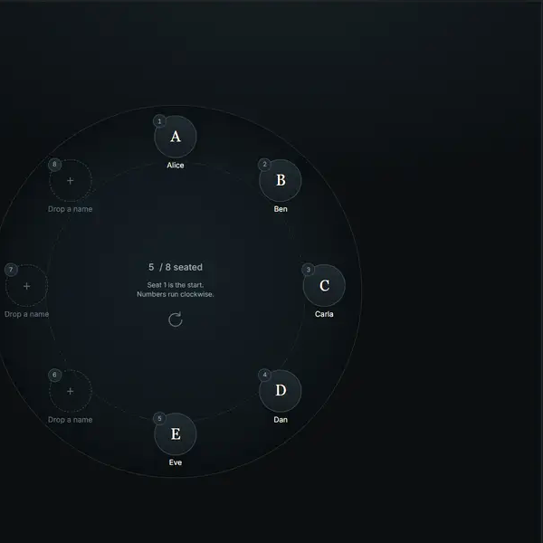
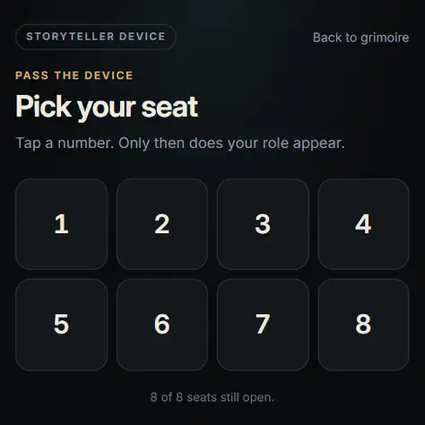

Same game state, same features, five different information architectures. Every prototype is interactive: build the bag, arrange seats, select players, mark deaths, add reminders, resolve night order, write notes. The setup chain runs from the bag to seat order to the player card.

The eight seats sit in a ring. The selected seat opens in the middle. Night order stays docked below as a wake queue.
Spatial · tablet at the table
Seat rail, grimoire canvas, inspector. Search and edit without leaving the board. Night order slides in from the right.
Workspace · laptop or large tablet
The game becomes a written record. Every wake, vote and death is an entry on a phase timeline, with notes and filters.
Chronological · review and print
One dense table for all seats. Filter, edit in a side panel, and hide the whole screen when a player takes the device.
Tabular · information density
One player card at a time, one hand, arrow keys or taps. Night order is a checklist sheet. Built for a phone.
Single focus · phone in handPick roles yourself or auto-fill a legal set. Counts and Baron update live. Choose three bluffs and the Drunk's shown role.
Open the bag
Drag names onto the circle, drag one seat onto another to swap, or drag a seat back to the tray. Tap then tap and the same works. Undo, shuffle, and a start marker at seat 1.
Open seat setup
Players tap their seat number, see their role, and type a name. The number is the cover: no role appears until it is tapped, and the card hides itself after 45 seconds. It shows what the player was shown, not the Storyteller's truth: the Drunk sees a Townsfolk card.
Open the player view
Full game state (seat order, names, deaths, reminders, notes, night order, log) persists in localStorage. No backend. Serve locally with python -m http.server 8010 so the pages share one origin. Research, tradeoffs and a recommendation are in design/README.md.